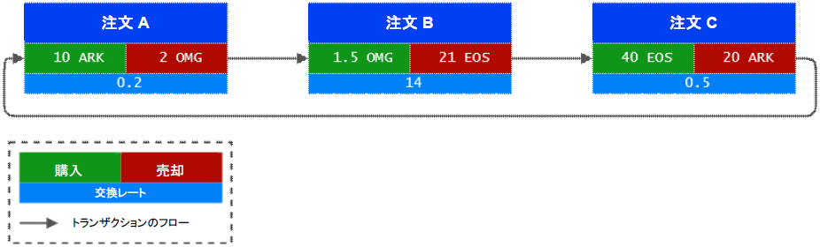
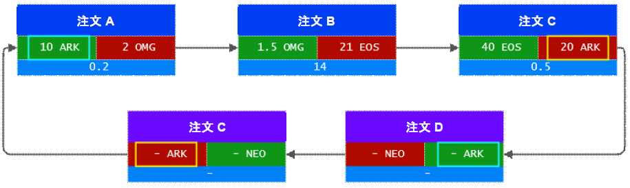
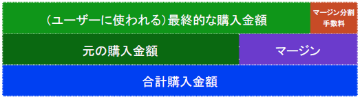

Loopring スマートコントラクト
Loopringスマートコントラクトは、Loopringプロトコルを実装した一連のEthereumコントラクトです。このドキュメントでは、それらが提供する機能を下記の構成で説明します。
コードはオープンソースでgithubから入手できます。
このドキュメントでは、LoopringスマートコントラクトをLCSと言及します。ホワイトペーパーおよびSupersimmetry氏{da447m@yahoo.com}のLoopringの所見で、ここで使用されている計算と数式に関してさらに読むことができます。現状のプロトコルの実装におけるプライシングモデルはホワイトペーパーおよびSupersimmetry氏のドキュメントと同様ですが、手数料モデルは異なるということに注意してください。
注文の管理
LSCの機能を理解するために、まずは注文の定義、ユーザーが利用可能な操作、および現在の注文ステータスの追跡方法を見ていく必要があります。
注文の詳細な分析
注文とは、マーケットでのユーザーの意図を記述するデータの集まりです。注文の出どころを保証するため、ユーザーのプライベートキーを使って、注文パラメータのハッシュで署名されます。署名はネットワーク上の注文に沿って送信されます。これは、送信者のアドレスを検証するために、注文がライフタイムにわたり不変のままにすることを必要とします。
Signature = ECDSA(SHA3(order_params))
注文が決して変更されない場合でも、LSCは現在の状態を計算することが可能です。
注文のパラメータに関連する変数(注文のパラメータの完全な一覧は、コードを参照してください)：
| データ | コメント |
|---|---|
| owner | 所有者（署名者）のアドレス |
| tokenS | 売却するトークン（トークンS） |
| tokenB | 購入するトークン（トークンB） |
| amountS | トークンSの売却額（金額S） |
| amountB | トークンBの購入額（金額B） |
| buyNoMoreThanAmountB | 下記を参照 |
| ttl | 注文が期限切れになるまでの秒数（time to live） |
| lrcFee | マイナーに支払うLRCの最大金額 |
| marginSplitPercentage | (より良いレートが見つかった場合の)マイナーに支払ったマージンの割合 |
私たちは、上記のモデルを単方向注文モデル、略してUDOMと呼びました。UDOMについてさらに学ぶには、私たちのmediumの投稿を確認してください。
注文の取引レートrは、次の数式r = amountS/amountBを使って決定されます。マイナーがリングマッチングをする場合、あなたが指定したamountBよりも多くtokenBを得る、より良いレートを見つける可能性があります。しかし、buyNoMoreThanAmountBフラグがセットされていれば、LSCは、やはり正確にamountBのtokenBを取得することを保証します。
例：
amountS = 10およびamountB = 2、r = 10/2 = 5。これは、あなたがtokenB毎に5つのtokenSを売却する意思があることを意味します。マイナーは、リングマッチイングを行い、あなたに2の代わりに2.5の tokenBを得ることができる金額をトッピングし、4のレートを見つけます。あなたは2つのtokenBだけを必要としており、buyNoMoreThanAmountBフラグをtrueに設定します。LSCはそれを考慮し、4のレートでトランザクションを作成し、あなたは各tokenBに対して4つのtokenSを売却し、2つの tokenS を効果的に節約しました。これはマイナーの手数料を考慮していないことに注意してください。
完全または部分的なキャンセル
ユーザは、注文に関する詳細およびキャンセルする金額を含む特別なトランザクションをLSCに送信することで、一部または全部をキャンセルすることができます。LSCは、これを考慮に入れ、キャンセルする金額を保管し、OrderCancelledイベントをネットワークに発行します。
約定とキャンセルの追跡
LSCは、注文のハッシュを識別子として使用し、その値を格納することで、約定およびキャンセルの金額を追跡し続けます。このデータは一般にアクセス可能で、データ変更時にOrderCancelled / OrderFilledイベントが発行されます。
この追跡は、リング決済のステップでのLSCに役立ちます。
マイナーが提供するデータの検証
このセクションでは、LSCがマイナーから受け取る予定のものと、データを検証するために取られるステップについて説明します。
注文リング
LSCは、マイナーから注文リングを受け取ることを期待しています。1つの注文リングは、希望の交換レートまたはそれ以上でマッチングするようリンクされた、複数の注文です。例として下図を参照してください。

売却する各注文のトークンは、次に購入する注文のトークンであることに注意してください。これは、反対のペアの注文をマッチングさせることなく、各注文がトークンを効果的に売買できるよう、ループを作成します。
1つのリングは、すべてのトランザクションがユーザによって指定されたオリジナルのものと同等またはそれ以上の交換レートで行われる場合に有効とされます。
例：ダイアグラムの上記のリングが有効かどうか確認しましょう。
0.2 * 14 * 0.5 = 1.4の場合、結果は1より大きいため取引可能でなければなりません。
注文リングの検証
LSCは、交換レートや金額の計算を行いませんが、マイナーが提供した、これらの値を検証する必要があります。これは、主に2つの理由でマイナーによって行われます。Solidityは浮動小数点演算、特にpow(x, 1/n)をサポートしておらず、また、計算はオフチェインで行いガスを節約することが望まれています。
次のセクションでは、注文リングの数学的検証について説明します。このページの冒頭に記載されているSupersimmetry氏のドキュメントを補足として確認することをおすすめします。
サブループチェック
このステップは、カバー付き金利裁定取引を防止します。有効なリングがマイナーによって発見されると、マイナーはゼロリスクでカバー付き裁定取引を達成するために、他の注文を追加するよう誘惑される可能性があります。 これはLoopringにおいて、マイナーからの不正な行為とみなされます。
以下の図は、2つの注文が追加されたかつて有効だったリングを示しています。 
これを防ぐために、Loopringでは有効なループにサブループを含めることはできないことを要します。これを確認する非常に簡単な方法があります：1つのトークンは購入または売却のポジションで2回存在できないというものです。上の図では、ARKが売却するトークンとして2回および購入するトークンとして2回含まれていることがわかります。
約定レートの確認
このページの上記理由により、リング内のトランザクションのレート計算はマイナーによって行われます。したがって、LSCはそれらが正しいことを確認する必要があります。
まず、各注文についてマイナーが提供した売却レートが、少なくともユーザによって設定された売却レートに対して等しいかそれ以下であることを検証します。これはユーザが、トランザクションの際に、少なくともaskまたはそれ以上の交換レートを得ることを意味します。
交換レートが確認されたら、公平性を確保するため、すべての注文に対して、すべてのマージン（ディスカウント）が同じ割合であることを確認します。
注文のスケーリング
注文は次のようにスケーリングされます。 約定およびキャンセルされた金額の履歴 送信者の口座の現在の残高
このプロセスでは、上記の特性に従って、約定される最小の金額で注文を探し、リング内のすべてのトランザクションをスケーリングするための参照に使用します。
例：元の注文と比較して最も少ない約定金額を5%とすると、リング内のすべてのトランザクションは5%に縮小されます。トランザクションが完了したら、残りの約定されるべき最も少ない金額の注文は完全に約定される必要があります。
リング決済
以前の確認ですべてOKなら、トランザクションが作成されます。
トランザクション
トランザクションを作成するため、LSCはTokenTransferDelegateスマートコントラクトを使用します。このデリゲートを導入すると、すべての注文がデリゲートを許可するだけで済むので、異なるプロトコルバージョンではなく、プロトコルのスマートコントラクトのアップグレードを容易にします。
リング内の各注文において、toksnSの支払いは前の注文に対して発生します。そして、マイナーにより選択された手数料モデルに応じて、マイナーの手数料が支払われます。モデルがLRC手数料の場合、手数料が支払われた後の残りの金額が注文の所有者に返されます。最後に、OrderFilledイベントが発生します。
すべてのトランザクションが作成されると、RingMinedイベントが発生します。
手数料モデル
このセクションでは、Loopringの現在の手数料モデルについて説明します。補足として、Daniel氏のmediumの記事について読むことをおすすめします。
現在の手数料モデルでは、マイナーは２つの選択肢があります。 ユーザーが注文を作成するとき、マイナーに支払う手数料のLRCの最大値と、マイナーが請求できる注文のマージンのパーセンテージを指定します。これは、マージン分割と呼びます。どちらを選択するかの決定は、マイナーに委ねられます。
マージン分割の表現：

マイナーがリングのマージンが小さすぎると判断した場合、LRC手数料を選択します。反対に、マージンが十分であり、結果として生じるマージン分割がLRC手数料以上の価値がある場合は、マージン分割を選択します。
しかし、ここで一ひねりがあります。マイナーがマージン分割を選択する場合、ユーザがトランザクションのためにマイナーに支払う予定の手数料と、同額の料金をユーザに支払う必要があります。これは、マイナーがマージン分割を選択する閾値を、注文のLRC手数料の2倍に上げ、LRC手数料の選択に重み付けを行います。
マイナーの視点からみると、低いマージンのリングで一定の収入を得ることができますが、大きなマージンのリングからの収入が少なくなるという欠点があります。市場が成長し、成熟していくにつれ、高いマージンのリングが少なくなることが予想され、手数料モデルはその未来に基づいています。
以下のグラフが結論です：

- fはLRC手数料
- xはマージン分割
- yはマイナーの収入
fがLRC手数料、およびxがマージン分割の場合、マイナーの収入yは、y = max(f, x-f)で、青線が得られます。
注文に関して指定されたLRC手数料が0の場合、方程式はy = max(0, x - 0)となり、y = xに単純化され、オレンジ色の線が得られます。
これから次の結果を得ます：
- マージン分割が0の場合、マイナーはLRC手数料を選択することで、インセンティブを得られます。
- LRC手数料が0の場合、これはオレンジ色の線で、収入は一般的なモデルに基づきます。
- マージン分割所得がLRC手数料の2倍以上になると、マイナーはマージン分割を選択します。
LRC手数料が0でない場合、マイナーが選択するオプションに関わらず、マイナーと注文の送信者の間でLRCの送信が常に行われることに注意してください。LRC手数料の余剰分を返送するか、LRC手数料を送信者に支払ってマージン分割を得るかのいずれかです。
現在の手数料モデルは議論の余地があります。気軽にSlackのコミュニティに参加し、それについて話してください。提案はgithubのLIPsレポジトリにて歓迎していいます。
発生イベント
このページでは、LSCが発行する一連のイベントについて触れています。これらのイベントは、リレー/オーダーブラウザや、注文ブックのアップデートを必要とする他のエレメントが迅速に情報を得られるよう存在します。
発生イベント一覧：
OrderCancelled
OrderFilled
* RingMined
詐欺や攻撃からの保護
リングフィルチェ
攻撃者は未確認のリングををすべてモニタし、自分のデジタル署名で同じリングをブロードキャストできます。これをリングフィルチェと呼びます。リングフィルチェを防ぐため、Loopringは、マイナーがリングを送信するための2つのステップを使用できるようにしています。
- リングのハッシュを提出し、承認を待つ
- リングそのものの提出
この保護は、LSCで指定されたblocksToLive時間内に有効です。この期間の後、リングが提出されなかった場合、他のマイナーがそれを請求できます。
サービスの拒否
ノードは、独自の基準を設定することで注文を選択的に処理することや、非公開または公開にすることができます。そのため、サービスの拒否を、非倫理的な行為とは見ていません。
大規模な小型注文攻撃
ユーザは、大量の小型注文を送信し、Loopringノードを攻撃する可能性があります。しかし、ノードが独自の基準に基づいて注文を拒否できるようにしているため、注文のほとんどは、マッチした際に満足できる利益をもたらさないため、拒否されます。したがって、大規模な小型注文攻撃は実現できません。
残高不足
悪意あるユーザは、実際のアドレスの残高が0であっても、注文内の値が0ではない注文に署名し、広めることができます。ノードは実際の残高が0の注文を監視し、発見することが可能であり、必要に応じてこれらの注文の状態を更新し、破棄します。
ノードは注文のステータスを更新するために時間を費やす必要がありますが、例えばアドレスをブラックリストに載せたり、関連する注文をドロップさせるなどして、作業を最小限におさえることもできます。